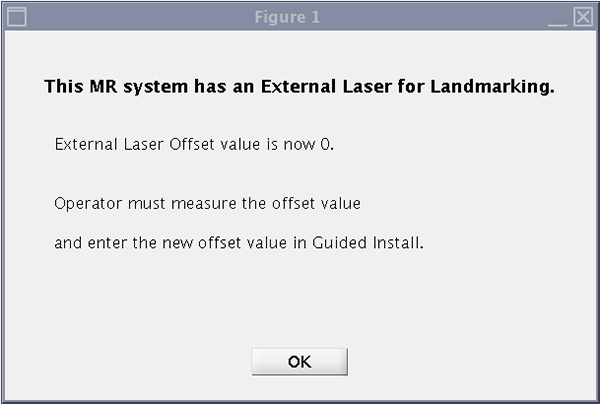

- 00000018WIA3005BDB0GYZ
- id_20684241.19
- Sep 12, 2025 3:27:20 AM
Doing DQA calibration with the Sphere With Spout (SWS) phantom
Details the steps needed to run the Gradient Calibration Tool (GCT) for systems running MR31.0 and higher and that possess the 17cm Sphere with Spout (SWS) phantom. GCT does the same checks and produces the same output as DQA.
Prerequisites
| Personnel requirements | |||
|---|---|---|---|
| Required persons | Preliminary requirements | Procedure | Finalization |
| 1 | - | 30 minutes (varies) | 10 minutes |
| Tools and test equipment | |||
|---|---|---|---|
| Item | Quantity | Part number | Manufacturer |
| Phantom, 17 cm Sphere with Spout (SWS) | 1 | 5967320 | - |
| HNA SWS Phantom Positioner | 1 | 5962014 | - |
| TDI Head Neck Array (HNA) | 1 | 5015399 | - |
| Required conditions |
|---|
| This procedure requires an accurate landmark. Make sure the laser light alignment is complete. Troubleshoot any problems you find while doing this calibration. |
| Safety |
|---|
|
Before working in any GE HealthCare MR suite or doing any GE HealthCare service procedure, you must:
If you have any safety concerns at any time, do not begin work or immediately stop work and move to a safe location. Immediately contact your supervisor or site safety officer for instructions on how to proceed. |
About this task
The 17cm Sphere with Spout (SWS phantom), replaces the DQA-III phantom for systems running MR31.0 and above.
- Checking the gradient connections
- Checking the image orientation
- Calibrating the gradient and table related parameters (xfull, yfull, zfull and isoVectorZ)
This tool uses the clinical head coil, a SWS phantom positioner, and the SWS phantom.
Like the DQA tool, if calibration adjustments are required, GCT does the applicable iterations until complete. Therefore, the GCT time to complete may vary.
Procedure
Finalization

The external laser offset value must be recalibrated and entered into Guided Install for the external laser feature to be functional. The calibration of the offset value is the responsibility of the customer.